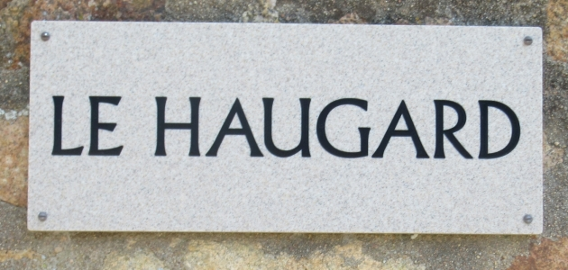
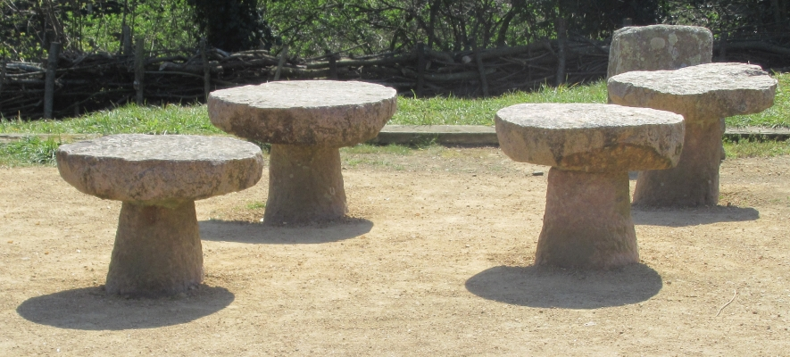
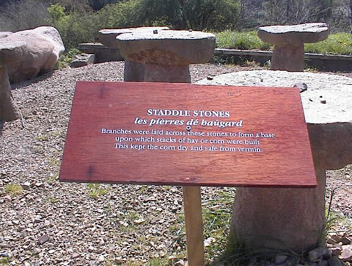

Acouothe eune fais—où'est don tch'est l'temps pâssé?

Pouor donner eune idée dé la grandeu d'un tas d'avoût d'aut'fais ichîn en Jèrri, né v'chîn chein qu' nou pouvait vaie en l'année mil neuf chent ieune (1901) au mais d'août. Jé savons qué, car j'en avons un r'cord, dans l'haûgard en driéthe dé la fèrme du Huthé (Le Hurel), à Trodez, St. Ouën, sé trouvait un fanmeux bieau tas d'avoût - dé fronment et d'avaine - tchi v'nait d'êt' finni d'bâti, étant l'produit d'la récolte dé trais ans sus onze vrégies. (Jé pensons tch'i' y'en eut mention, dé ch't înmense tas, dans la gâthette du sé contre la fîn du mais d'août pouor l'année susdite.) Et ch'la ch'tait siez Moussieu L'Feuvre, Ph'lippe Édouard, Seigneu du Fyi d'Morville. Et chu Philippe Édouard 'tait fis Philippe (tch'avait l'mênom du "Gros Marté"), fis Philippe, fis Philippe, fis Philippe (des Landes), fis Philippe, fis Aaron, fis Phlippe, fis Philippe (dé L'Êta), fis Pierre né dans les 1550. Né v'là don ieune des branques dé la grand' fanmil'ye Lé Feuvre dé St. Ou d'aut'fais. Lé Ph'lippe Édouard, à tchi apparténait l'tas, mouothit deux ans auprès, en 1903, et san péthe, lé "Gros Marté ", 'tait né en 1826 et décédé en 1914.
Appathemment qué ch'tait iun des bieaux et pus grands tas dé tout temps. Eh bein, la dgèrte d'chu tas était dé huit pèrques ou, en travèrs au pid, chînquante-siex pids (56 pids), et chînquante pids d'haut jusqu'à la couronne! Ah ça, pensez don - eune souaixantaine dé vèrgues d'tou, et dgiêx-neuf vèrgues d'laize! Tchille assiette dé tas! Et pis, chu fanmeux tas 'tait parfaitement fait. Mais, peut-n'on dé nouos jours sé fidguther un patheil amas d'gèrbes, des mille et des mille, sus des pièrres dé haûgard (ou pièrres dé tas) étant, comme dithaient nouos anciens, pouor la gângne dé Dgi et pouor lé bestchias - un tas comme eune maiethon atout un combl'ye comme un cliochi d'églyîthe! Tchi grainelle, eune fais battu, et tchi fouôrrage - dé fronmentais et d'av'née! Hé, fallait-i' don saver tâsser pouor faithe un tas patheil - pensez à vaie!

Né v'chîn comme tchi qu' nou s'y prannait. Eune fais les pièrres dé tas (ou pièrres dé haûgard) pliaichies, dans l'haûgard, i' restaient là d'amors pouor tréjous. Y'avait l'pilotîn, ou pilyi ou pid d'tas, tch'était la pièrre début - dgiêx-huit pouces à un coupl'ye d'pids d'haut - sus tchi 'tait l'assiette étant eune ronde et pliate pièrre, et y'en avait neuf ou dgix d'ches'-là en rond, ou tchiquefais pus, atout ieune dans l'mitan, ou pus étout. Et tout ch'la ch'tait les pièrres dé haûgard tchi faîthaient l'assiette du tas. Et ch'tait pouor garanti contre la vèrminne. Ah ça, nou posait des longues branques, d'eune assiette à l'aut' et allant à la cheinne/les cheinnes du mitan, en travèrs et en long ofûche, atout des fagots, ou bein nou faîthait sèrvi des plianches, ou des poutres, et cétéra. Nou c'menchait à tâsser bein souongneûthement, mais souvent la preunmié tchelle étant des dgèrbes battues d'l'année dé d'vant, atout tchiquefais d'la feûgiéthe. Et pis à m'suthe qué l'tâsseux bâtissait, ou tâssait, i' fallait piler bein châque tchelle. Danme, ch'tait tout à fait un mêtchi, qué l'chein du tâsseux! Et ché n'tait bein seux pon tout l'monde tchi pouvaient y mett' la main. Un bouôn tâsseux 'tait bein connu et, souvent, faithait ch'la dans tout un vaîthinné, et ofûche ailleurs. Mais, dans chu cas-chîn, pouor ch't înmense tas, il y'avait bein seux deux ou même trais tâsseurs. Mais étout, peut-n'on s'înmaginner les tchithiages, lé temps pâssé, dans l'hèrnais à êclon? Pouor chu grand tas, par exempl'ye - des chentaines dé viages, à chèrgi, et dêchèrgi... Et pis l's êchaûfauds, les tchiâtres et l's êtchelles! Il en fallait, d'la main-d'oeuvre! En pâssant, dîthons qué j'avons prêsêrvé à La Hougue Bie, deux exempl'yes d'un tou d'pièrres dé haûgard, ilà en d'houors tout près l'tou d'preinseu et la meule. Et pis, étout, dans "La Tchèrquéthie" ous y vèrrez lé vièr hèrnais à êclon, lé seul dé tout bein tchi nouos restait dans l'Île. Quand nou-s-entrait l'avoùt nou dîthait qu' nou 'tait à appraichi, ou appraichi, au haûgard, Et nou ouiyait patheilles expressions comme: "J'eûnmes un fort jour hièr; j'tions à appraichi ", et ofûche, quand l'temps n'tait pon propice, "Ch'est d'failli temps pouor les cheins tchi sont à appraichi ches jours ". Pouor pâsser les dgèrbes d'la chèrge au tâsseux, ch'tait deux à la fais - ieune pitchie sus châque dé d'la fourtchette, fourtchette en bouais l'temps pâssé, sans doute.

Un tas d'fronment, ou tas d'haûgard, pouvait cont'nîn dépis chînq chents à deux ou trais mille dgèrbes. Et j'avons veu acouo, dans l'temps d'nouot' jannèche, auprès la preunmié Dgèrre dé 1914-18, des tas à vîngt vrégies d'fronment, tchiquefais la récolte dé deux ou trais fèrmiérs ensembl'ye. Dîthons en pâssant qué, en 1961, par exempl'ye, il 'tait malaîthi d'en trouver iun ou deux, tas, dans l'Île entchiéthe, même dé deux ou trais vrégies. Eune fais battu, et r'bâti, lé tas dév'nait eune vieillotte. Donnons comme exempl'ye un tas dé huit vrégies d'avoût. Patheil tas d'mandait quat' pas, ou dans les quat' vèrgues, dé laize au pid, et don eune pèrque et d'mie dé tou. Des p'tits tas 'taient appelés des tas d'clios ou tas d'camp, faits au clios sans doute, et nou distîndgait acouo ches'-chîn comme un tas d'pid, tas d'bas ou tas dé d'but, qué nou pouvait faithe sans aver à monter d'ssus, étant d'but en pliaichant les dgèrbes atout eune fourque ou fourtchette, et pis un tas dé genou, tas à genou ou tas à genouors, qué nou bâtissait en s'agenouoillant d'ssus pouor sèrrer les dgèrbes. Lé tas dé d'but éthait cont'nu eune chentaine dé dgèrbes et l'tas dé genou jusqu'à 500 dgérbes. Quand l'tâsseux pliaichait les dgèrbes, s'i' s'agissait d'un grand tas, i' fallait tchitch'un à genouors, à sèrrer. Pis danme, il' y suaient, à tout chu travas, ches avouôteurs ou gens d'avoût, comme nou l's appelait! I' n'avaient pon l'temps ni l'envie d'chanter, 'ouos en chaille. V'là tchi m'met à l'idée, dgia, en pâlant des avouôteurs d'aut'fais, quand il' 'taient à scier et à dgèrber, lus vielle couôteunme au clios dé chanter à tour dé rôle. Telles vieilles chansons comme "Jean, gros Jean ", "J'ai pèrdu ma femme ", "Ver-du-ron, ver-du-ro-net'-o ", etc. Et y'avait tout pliein d'cidre, par la joudgie, tch'i' fallait sans doute à chu travas-là, par eune arsion d'chaleu lé pus souvent.
Ah véthe, chtait un mêtchi tout partitchulyi, qué l'chein du tâsseux. J'alllons oublier, dgia, à dithe qué, en tâssant, nou rempliait l'mitan atout les faillies dgèrbes qué nou-s-appelait du meûné ou du maîné, Nou dîthait "Ch'est d'faillies dgérbes v'là tchi f'tha pouor du meûné ". Mais nou-s-appelait l'mitan du tas lé meûné étout, et nou dîthait tch'i' fallait tréjous garder l'meûné ou l'mitan remplyi en tâssant. Mais, en c'menchant l'tas nou faîthait souvent un binnot au mitan du fond d'tas et nou-s-app'lait ch'la la maîne du tas.
Ah ça, à fouorche d'bâti, lé moment v'nait qué tchitch'un dîthait "I' s'en va êt' temps d'accomblier" (ou d' "rentrer"), tchi veurt dithe rentrer pouor finni en pointe. Mais étout, n'fallait pon qu' l'accombliage sé fîsse trop vite, espécialement quand ch'tait un tas tch'avait du tou. Eh bein, pouor la partie d'haut du tas nou dithait l'combl'ye ou l'accombl'ye. Et quand nou-s-arrivait au combl'ye d'un tas, nou pliaichait des d'mié-dgèrbes, pis pus tard des dgèrbes acouo pus p'tites jusqu'à haut. Pis nou faîthait la couronne atout du glyi ou p'tits soubats êcalés, mais amathé d'un but, bigbichis iun sus l'autre. La couronne ou tête du tas 'tait bridée atout des cèrcl'yes en bouais. Ou bein nou bridait en faîthant un han dé fi d'mèrlîn. Nou dîthait des soubats ou des gliots, pouor couvri l'tas en glyi. Et ch'tait les dgèrbes d'grain eune fais soubattues. Pouor distîndgi nou dîthait eune dgèrbe à la main pouor soubattre sus l'aithe sus un draventeux, pouor faithe des soubats, tandi qu' autrément nou soubattait les dgèrbes sus l'soubatteux et pis nou finissait au fliais. Quand ch'tait pouor des soubats, i' n'fallait pon qu' ches'-chîn fûssent saccagis au fliais. Ch'tait battre à la grange, bein seux. Dîthons, en pâssant, qué l'temps pâssé, au dgiêx-huitième siècl'ye, par exempl'ye, les femmes étout 'taient souvent empliyées à chu travas hardi pénibl'ye, à battre à la grange. Finnalement nou couronnait l'copé du tas d'eune branque dé louothi, ou tchiquefais d'eune couleu. Nou faîthait les gliots sustout atout d'l'êtrain d'blié, ou atout du favés et, bein gardés, i' pouvaient sèrvi trais ans. J'avons tréjous ouï dithe qué nouos grand-péthes Lé Maistre et Lucas 'taient raide bouons à accomblier, et à faithe la couronne en glyi au tas d'grain, ou autre avoût. Tout ch'la s'faîthait partout l'Île jusqu'à la fîn du drein siècl'ye, et même siez l's uns ou l's aut's jusqu'à d'vant la preunmié Dgèrre. V'là tchi s'pèrdit graduellement, mais tout à fait par la fîn d'l'Otchupâtion. Tchiquefais nou-s-ajouôtait à un tas, deux ou trais ans d'affi. Eh bein, dans chu cas-là nou dêtâssait l'combl'ye seulement châque année pouor lé battre.
Véthe, tout ch'la est hors et a dispathu - récoltes et mêtchi et tout l'bataclian. Mais, hélas, combein tch'i' y'a d'gens au jour d'aniet tchi comprendront même un quart dé tout chu devis? Enfîn, ch'est r'cordé pouor tréjous, car ou trouv'thez touos ches vièrs mots d'nouot' langue et d'aut's explyicâtions dans l'Dictionnaire Jersiais-Français. Mais, quant au mêtchi d'la tâss'sie et tout ch' tch'en est entouor l'avoût - acouothe eune aut' vielle bédache dé nouot' chièr Jèrri tch'a dispathu à tout janmais!
FLM
Viyiz étout: